- Armatex
- Złączki na wcisk
- Złączka GW TS2
Pegler Yorkshire · Tectite 316
Złączka GW Tectite TS2
Złączka GW z linii Tectite 316: 11 rozmiarów (15mm x 1/2" – 54mm x 2"). Zastosowanie: rury ze stali nierdzewnej kwasoodpornej.
- Rozmiary
- 11
- System
- push-fit
- Producent
- Pegler Yorkshire
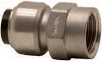
Rozmiary i numery artykułów
Źródło: katalog Tectite 2026| Rozmiar | Nr artykułu | Lista |
|---|---|---|
| 15mm x 1/2" | 25206 | |
| 18mm x 1/2" | 25210 | |
| 18mm x 3/4" | 25212 | |
| 22mm x 1/2" | 25220 | |
| 22mm x 3/4" | 25222 | |
| 22mm x 1" | 25223 | |
| 28mm x 3/4" | 25224 | |
| 28mm x 1" | 25225 | |
| 35mm x 1 1/4" | 25230 | |
| 42mm x 1 1/2" | 25232 | |
| 54mm x 2" | 25234 |
- Linia
- Tectite 316
- Zastosowanie
- rury ze stali nierdzewnej kwasoodpornej
Zapytaj o ofertę: Złączka GW TS2.
Dodaj rozmiary do listy przyciskiem „Dodaj” albo od razu napisz do nas. Ceny hurtowe, dostępność i terminy przygotujemy w ciągu jednego dnia roboczego.
Inne produkty w linii
Wszystkie linie systemu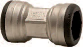
DwuzłączkaTS1 · 7 rozm.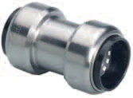
Złączka ślizgowaTS1S · 4 rozm.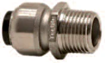
Złączka GWTS3 · 10 rozm.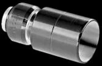
Redukcja nypelTS6 · 13 rozm.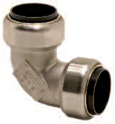
Kolano 90 st.TS12 · 7 rozm.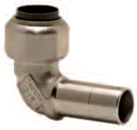
Kolano 90 st. nypelTS12S · 4 rozm.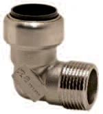
Kolanko 90 st. GZTS13 · 4 rozm.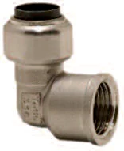
Kolanko 90 st. GWTS14 · 5 rozm.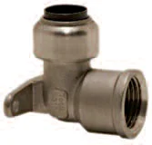
Kolano 90 st. GZ z łapamiTS15 · 3 rozm.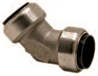
Kolano 45 st.TS21 · 4 rozm.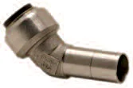
Kolano 45 st. nypelTS21S · 4 rozm.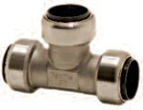
Trójnik równoprzelotowyTS24 · 7 rozm.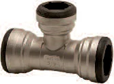
Trójnik redukcyjnyTS25 · 15 rozm.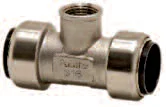
Trójnik redukcyjny GWTS30 · 7 rozm.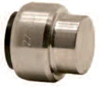
KapaTS61 · 7 rozm. Złączka GW ruchomaTS62 · 2 rozm.
Złączka GW ruchomaTS62 · 2 rozm.